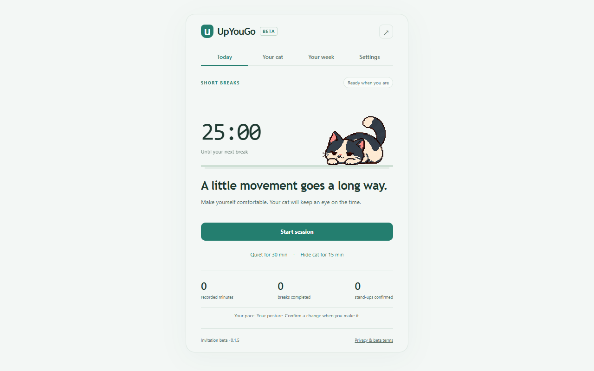

免费版
$0 无需购买- 默认黑色像素猫和基础互动
- 短休息、坐站交替提醒及可调时长
- 隐藏、免打扰、网站排除和减少动画
- “今天”的简要活动数字
基础提醒和舒适功能计划继续免费。
像素小猫出现在你允许的网页上，轻轻提醒你短暂休息，或切换坐站姿势。
邀请测试免费。当前没有结账入口，也不会自动扣费。

基础功能保持免费。设置和经过确认的活动记录留在本机浏览器中。
默认工作 25 分钟后休息 2 分钟，也可选择坐 30 分钟、站 10 分钟。时长可调整，每次切换都由你确认。
让小猫出现在获授权网页，或仅在提醒时出现。可以摸摸、移动、临时隐藏、排除网站，也可减少动画。
最近七个本地日期内确认过的活动记录保存在 Chrome。扩展不读取网页正文，也不上传浏览统计。
买断版计划在未来推出。当前邀请测试用户可免费预览全部功能。
基础提醒和舒适功能计划继续免费。
计划长期价格，并非限时优惠。 买断覆盖这里列明的权益，不包含所有未来独立内容包。最终结账页会显示适用税费。
这只是临时预览，并非永久买断授权。商户审核、购买核验、授权恢复和退款处理完成前，不开放结账。未来购买后可在7 个自然日内申请退款。
提醒会请你确认下一阶段，不会声称能识别你的真实姿势。
选择短休息或坐站交替，再调整时长与工作时段。
网站和系统通知权限都可以选择是否授予；拒绝网站授权仍能使用工具栏计时。
准备好时再开始休息、恢复工作或改变姿势。无法确认的离线时间不计入统计。